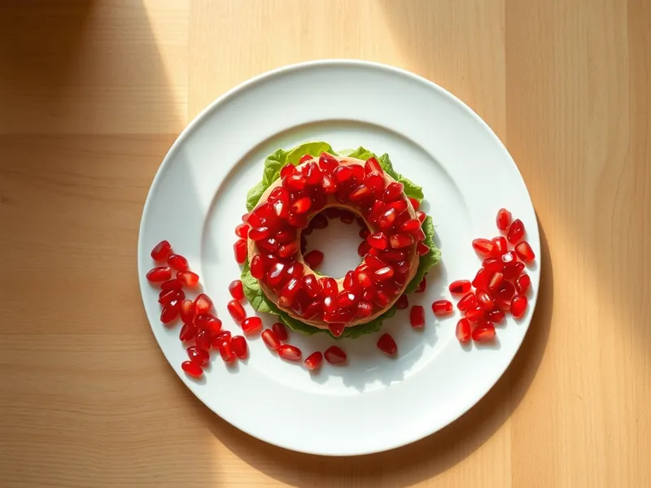

Салат «Гранатовый браслет» с курицей и свёклой
Слоёный салат кольцом из курицы, свёклы, картофеля и орехов под россыпью граната
100 мин8 порц.349 ккал на порциюБ 18 · Ж 22 · У 19Русская кухня
Открыть в приложении: порции, таймеры, список покупок
Продукты на 8 порц.
- Куриное филе400 г
- Свёкла2 шт
- Картофель3 шт
- Морковь2 шт
- Яйцо куриное3 шт
- Грецкие орехи60 г
- Гранат1 шт
- Майонез160 г
- Чеснок по желанию1 зуб.
- Соль0,7 ч. л.
- Вода3000 мл
Как готовить
- Сварите свёклу в кожуре на среднем огне 50-60 минут, пока нож не будет входить легко. В другой кастрюле сварите картофель и морковь в кожуре 20-25 минут.
- Курицу положите в кипящую подсоленную воду и варите на слабом огне 25 минут, пока сок на разрезе не станет прозрачным. Остудите в бульоне.
- Яйца сварите вкрутую: 10 минут после закипания, затем залейте холодной водой.
- Орехи прокалите на сухой сковороде на среднем огне 3 минуты и порубите ножом. Гранат разберите на зёрна.
- Овощи и яйца очистите и натрите на крупной тёрке каждое отдельно, курицу нарежьте мелким кубиком. В майонез по желанию выдавите чеснок.
- В центр плоского блюда поставьте стакан и выкладывайте вокруг него слоями: картофель, морковь, курица, орехи, яйца, свёкла. Каждый слой слегка посолите и смажьте тонкой сеткой майонеза.
- Уберите стакан и плотно покройте весь салат зёрнами граната. Поставьте в холодильник на 1 час, чтобы слои пропитались.
Совет. Стакан смажьте снаружи растительным маслом, тогда он легко выйдет и не порвёт кольцо. Гранат выбирайте кисло-сладкий и тёмный, бледные зёрна выглядят скучно.